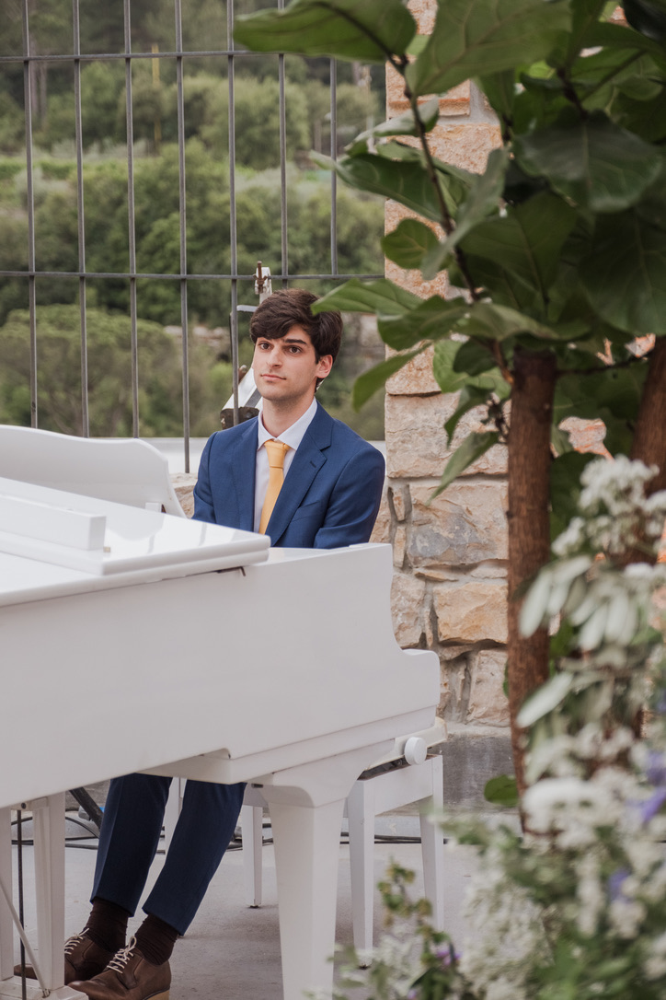

Welcome
Hi! I'm Andreas, and this corner of the internet is my digital home.
Everything I do, I do for the love of music. By day, I'm a student in Sound and Music Computing at the Music Technology Group at the Universitat Pompeu Fabra, in Barcelona. By night, I'm a hobbyist piano player and oud learner.
I enjoy bridging the gap between Computing and Music. I've documented some examples in the projects page. I don't write often, but when I do, I publish them in the writings page. One piece of writing I'm proud of is The Sound of Explosions, an essay I wrote about an electro-acoustic piece of the same name I composed in 2023.
Alongside artistic projects, I combine and strive to keep combining Computing and Music in my work. Previously, I've worked for Black Goblin Audio and DataMind Audio in different respects, specifically working on Deep Learning within sound.
My interests within the space lie in expanding music technology from within non-western musical cultures, notably Middle-Eastern music.
I've heard, read, thought, and debated a lot about Music, and the impact of modern AI in the space. While this is very much a nuanced conversation, I have two firm beliefs: the first, is that Music is fundamentally human. The second, is that Music is what you want Music to be.
